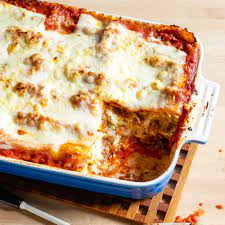

<!DOCTYPE html>
<html lang="eng"></html>
<head>
  <meta charset="UTF-8">
  <title>Lasagna recipe</title>
</head>

<body>
  <h1>Lasagna recipe</h1>

  
  <h2>Description</h2>
  <p>My family first tasted this rich, homemade lasagna recipe at a friend's home on Christmas Eve. We were so impressed that it became our own holiday tradition as well. I also prepare it other times of the year. This classic lasagna recipe is requested often by my sister's Italian in-laws—I consider that the highest compliment! —Lorri Foockle, Granville, Illinois</p>

  <h3>Ingredients</h3>
  <ul>
    <li>Cheese</li>
    <li>Pasta</li>
    <li>Sauce</li> 
  </ul>

  <h3>Steps</h3>
  <ol>
    <li>In a large skillet over medium heat, cook and crumble beef and sausage until no longer pink; drain. Add next 7 ingredients. Bring to a boil. Reduce heat; simmer, uncovered, 1 hour, stirring occasionally. Adjust seasoning with additional salt and pepper, if desired.</li>
    <li>Meanwhile, in a large bowl, lightly beat eggs. Add parsley; stir in cottage cheese, ricotta and Parmesan cheese.</li>
    <li>Preheat oven to 375°. Spread 1 cup meat sauce in an ungreased 13x9-in. baking dish. Layer with 3 noodles, provolone cheese, 2 cups cottage cheese mixture, 1 cup mozzarella, 3 noodles, 2 cups meat sauce, remaining cottage cheese mixture and 1 cup mozzarella. Top with remaining noodles, meat sauce and mozzarella (dish will be full).</li>
    <li>Cover; bake 50 minutes. Uncover; bake until heated through, about 20 minutes. Let stand 15 minutes before cutting.</li>
</ol>
</body>
